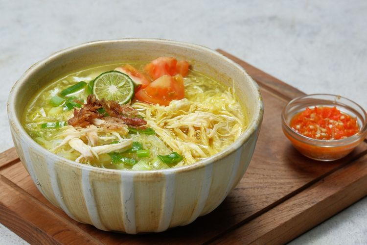

<!DOCTYPE html>
<html>
    <head>
        <title>Web Warung Tegal</title
        <style type="text/css">
        </style>
        </style> <!--[if lt IE 9]>
        <script src="http://html5shiv.googlecode.com/svn/trunk/html5.js"></script>
        <![endif]-->
    </head>
    <body>
        <div class="wrapper">
        </div><!-- wrapper -->
    </body>
</html>

<header>
    <h1> Warung Bu NYA</h1>
    <br>
        <nav>
            <ul>
                <li><a href="" class= "current">beranda</a></li>
                <li><a href="">daftar masakan</a></li>
                <li><a href="">katering</a></li>
                <li><a href="">tentang</a></li>
                <li><a href="">kontak</a></li>
            </ul>
        </nav>
</header>

<section class="courses">
    <article>
        <figure>
            
         </figure>
        <hgroup>
            <h2>Soto Ayam</h2>
        </hgroup>
        <p>Soto ayam adalah makanan khas Indonesia yang berupa sejenis sup ayam dengan kuah yang berwarna kekuningan.</p> 
    </article>
    <article>
        <figure>
             
        </figure>
        <hgroup>
            <h2>Pecel Madiun</h2>
        </hgroup>
        <p>Pecel adalah makanan yang menggunakan bumbu sambal Activate Windows kacang sebagai bahan utamanya yang dicampur dengan aneka jenis sayuran.</p>
    </article>
    <article>
        <figure>
            
        </figure>
        <hgroup>
            <h2>Lontong Balap</h2>
        </hgroup>
        <p>Lontong balap adalah makanan khas Surabaya yang terdiri dari lontong, tauge, tahu goreng, lentho, bawang goreng, kecap, dan sambal.</p>
    </article>
    <article>
        <figure>
            
        </figure>
        <hgroup>
            <h2>Semanggi</h2>
        </hgroup>
        <p>Makanan semanggi adalah pecel semanggi, yaitu makanan khas Surabaya, Jawa Timur yang bahan dasarnya adalah daun semanggi. .</p>
    </article>
    <article>
        <figure>
            
        </figure>
        <hgroup>
            <h2>Gado-gado</h2>
        </hgroup>
        <p>Gado-gado adalah makanan khas Indonesia yang terdiri dari sayuran, telur, tempe, tahu, dan bumbu kacang.</p>
    </article>
    </article>
</section>

<aside>
    <section class="popular-recipes">
        <h2>Masakan Populer</h2>
        <a href="">Sayur Sop</a>
        <a href="">Sayur Asem</a>
        <a href="">Sayur Lodeh</a>
        <a href="">Sayur Bayam</a>
    </section>
    <section class="contact-details">
        <h2>Kontak</h2>
        <p>Warung Bu NYA<br />
            di seluruh Indonesia
    </section>
</aside>

<footer>
    &copy; 2024 Warung Bu NYA
</footer>

<!DOCTYPE html>
<html lang="en">
<head>
    <meta charset="UTF-8">
    <meta name="viewport" content="width=device-width, initial-scale=1.0">
    <title>Web Warung Bu NYA</title>
    <style>
        header, section, footer, aside, nav, article, figure, figcaption {
            display: block;
        }
        /* General reset */
        * {
            margin: 0;
            padding: 0;
            box-sizing: border-box;
            font-family: 'Arial', sans-serif;
        }

        /* Wrapper for overall page content */
        .wrapper {
            width: 100%;
            margin: 0 auto;
            padding: 20px;
            background-color: #f8f4f9;
        }

        /* Header styles */
        header {
            background-color: #f7d5e0;
            text-align: center;
            padding: 20px 0;
            border-bottom: 5px solid #e597b2;
        }

        header h1 {
            font-size: 36px;
            font-weight: bold;
            color: #b04878;
            text-transform: uppercase;
            letter-spacing: 3px;
        }

        /* Navigation menu */
        nav ul {
            list-style: none;
            display: flex;
            justify-content: center;
            gap: 20px;
        }

        nav ul li {
            display: inline;
        }

        nav a {
            text-decoration: none;
            font-size: 18px;
            color: #b04878;
            padding: 10px 20px;
            background-color: #fde2ef;
            border-radius: 50px;
            transition: all 0.3s ease-in-out;
        }

        nav a:hover,
        nav a.current {
            background-color: #b04878;
            color: white;
        }

        /* Courses section */
        .courses {
            display: flex;
            justify-content: space-around;
            margin-top: 30px;
            padding: 20px;
            background-color: #f8f4f9;
        }

        article {
            width: 45%;
            background-color: #ffe6f2;
            border: 1px solid #e597b2;
            border-radius: 10px;
            padding: 20px;
            text-align: center;
            box-shadow: 2px 2px 10px rgba(0, 0, 0, 0.1);
            transition: transform 0.3s ease;
        }

        article:hover {
            transform: scale(1.05);
        }

        figure img {
            width: 100%;
            border-radius: 10px;
        }

        hgroup h2 {
            color: #b04878;
            font-size: 24px;
            margin-top: 10px;
        }

        hgroup h3 {
            color: #e597b2;
            font-size: 18px;
            margin-bottom: 15px;
        }

        p {
            font-size: 16px;
            line-height: 1.6;
            color: #5f5f5f;
        }

        /* Popular Recipes in Aside */
        aside {
            background-color: #fde2ef;
            padding: 20px;
            margin: 30px 0;
            border-radius: 10px;
            border: 1px solid #e597b2;
            box-shadow: 2px 2px 10px rgba(0, 0, 0, 0.1);
        }

        .popular-recipes h2,
        .contact-details h2 {
            color: #b04878;
            font-size: 22px;
            margin-bottom: 10px;
            text-align: center;
        }

        .popular-recipes a {
            display: block;
            color: #b04878;
            text-decoration: none;
            margin: 5px 0;
            padding: 10px;
            background-color: #ffe6f2;
            border-radius: 30px;
            text-align: center;
            transition: background-color 0.3s ease;
        }

        .popular-recipes a:hover {
            background-color: #b04878;
            color: white;
        }

        /* Contact details */
        .contact-details p {
            font-size: 16px;
            color: #5f5f5f;
            text-align: center;
        }

        /* Footer styles */
        footer {
            background-color: #fde2ef;
            text-align: center;
            padding: 15px 0;
            margin-top: 20px;
            border-top: 3px solid #e597b2;
            color: #b04878;
        }

        footer p {
            font-size: 14px;
        }

        /* Responsive design */
        @media (max-width: 768px) {
            .courses {
                flex-direction: column;
                align-items: center;
            }

            article {
                width: 80%;
                margin-bottom: 20px;
            }
        }
    </style>
